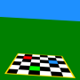
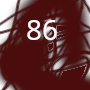
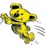
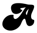
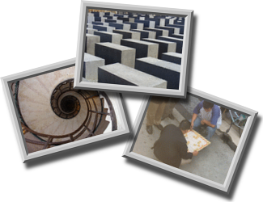
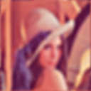
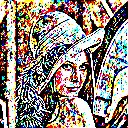

Font set to purple.0x01/0x01/0x01
Select
Robot+block+wiz+says: select an image that contains numbers and save it to desktop for next step you need the correct image to pass roboblok.
Todo: setup+input+field+for+a+url